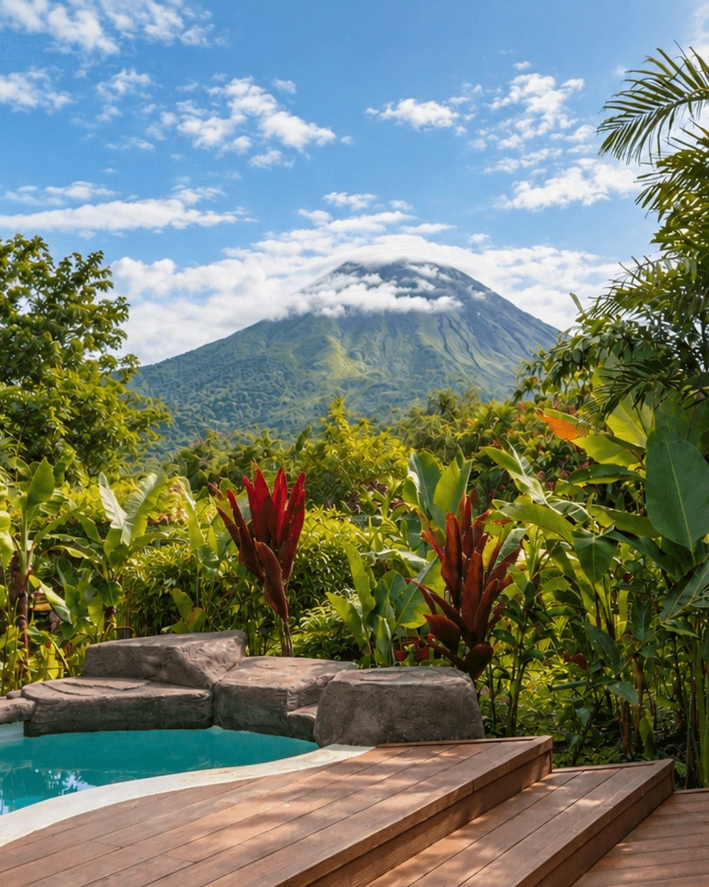
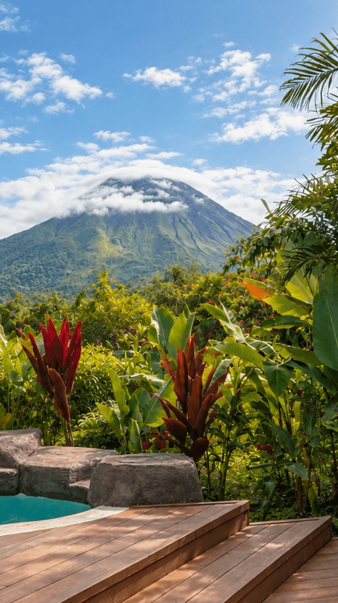

RR-NOV-02 · 2026-11-17 · Instagram 4:5 | Facebook Story 9:16
Post: Meet Arenal, Chachagua’s sister in Rainforest Resorts
Instagram image 4:5
4:5 composition prepared · Visual review pending


Facebook Story 9:16
9:16 composition prepared · Visual review pending


Selected image or video: Arenal rainforest drone pic 5.png